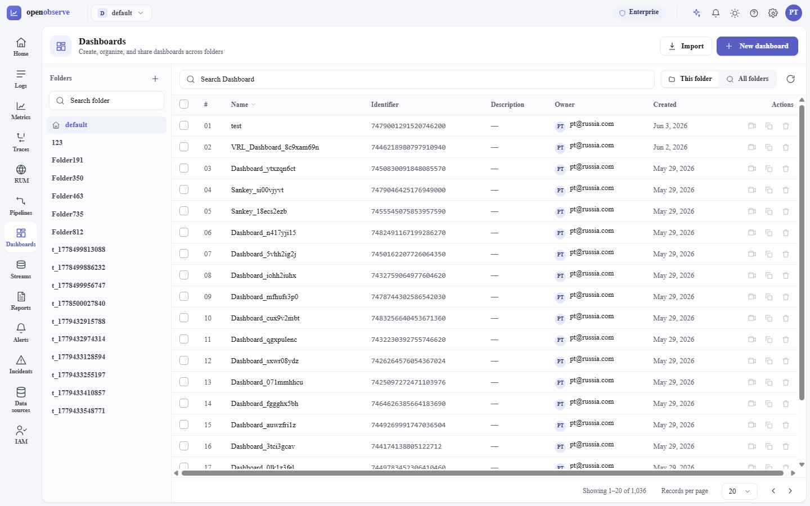
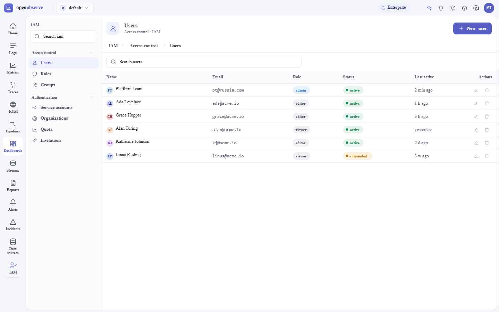
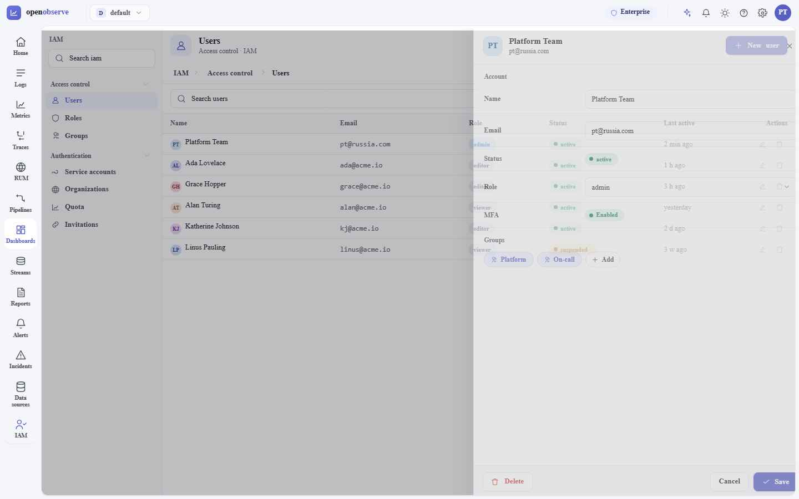
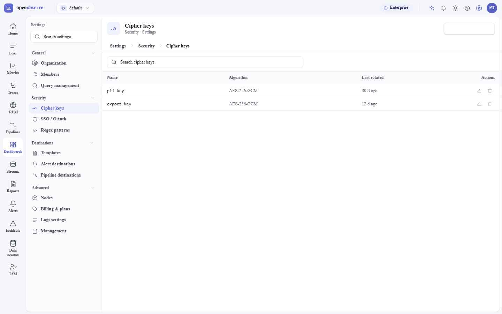

Visual reference companion to HANDOFF.md. Locked decisions, tokens, type, table anatomy, and the IAM/Settings navigation model — as built in the reference prototype.
Reference screens
Captured from the working prototype. Full interaction detail and exact CSS values live in HANDOFF.md.

Framed chrome · titled header (tile + title + subtitle, tagline row 2) · in-content folder rail · data table with serial, fluid name column, and a minimal hover-revealed action column.

Grouped left rail (6+ sections) → one header with breadcrumb IAM › Access control › Users → full-width table. Search-only toolbar; primary CTA top-right.

Row click (or “+ New”) opens a right-side drawer with key/value fields and a Delete · Cancel · Save footer. Edit in the context of the list — no full-page hop.

Settings reuses the exact IAM shell: grouped rail → table → drawer, breadcrumb Settings › Security › Cipher keys. The two modules are mechanically the same.
Foundations
Reference the semantic aliases in components — never a raw hex. The ramps below feed those aliases.
--text; metadata / column heads / IDs / timestamps → --text-3. Outer & input borders → --border; row & section dividers → --border-soft. Selected rows use --iris-300, never --primary at full strength. One primary action per view.Foundations
IBM Plex Sans for UI · IBM Plex Mono for every identifier, count, timestamp and code string.
One per view. Never 800.
Active nav, buttons, badges, labels.
The name column. Calm, not loud.
Body, metadata, IDs, captions.
Components
Fixed widths for bounded columns; one fluid name column absorbs slack. Sticky header, minimal action column.
| Column | Width | Rule |
|---|---|---|
| Checkbox | 40px | Fits the 16px box + padding. Header holds select-all. |
| Serial # | 48px | Tabular-nums, --text-3, zero-padded. Flat lists only. |
| Name | auto / fluid | The one column with no fixed width. 500 weight. |
| ID / hash | fit content | .mono, --text-3, sized to known length. |
| Enum (role/status) | ~96–120px | Sized to the badge. |
| Timestamp | ~110–140px | --text-3. |
| Actions | 90px, right | Minimal. 1–3 icon verbs, opacity .35 → 1 on row hover; overflow → ⋯. Sticky-right when the table scrolls horizontally. |
.tbl-wrap{overflow:auto} is the safety valve. Header is position:sticky;top:0; rows are 38px (compact).Navigation
Row 1 = tile + title + subtitle + primary action. Row 2 = exactly one of {tabs · breadcrumb · tagline}. The header identifies the module and never mutates between tabs.
2–5 sibling sections → tabs in row 2. 6+ sections → grouped left rail. IAM (7) and Settings (16) both use the rail, so they behave identically.
Only on an L3+ drill, always in header row 2. Module › Group › Record. Crumbs back-navigate; collapse the middle to … past 4 levels (keep first + last two).
Admin records open in a right-side drawer (460 / 600px), Esc-dismiss, Delete · Cancel · Save footer. “+ New” opens the same drawer blank. Full-page only when the detail needs full width.
O2 design system · generated from the prototype reference build · pair with HANDOFF.md for exhaustive CSS values